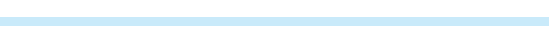

PM2.5

空氣品質：
模式切換
觀測站：
基隆市 基隆
新北市 汐止
新北市 萬里
新北市 新店
新北市 土城
新北市 新莊
新北市 菜寮
新北市 林口
新北市 淡水
新北市 三重
新北市 板橋
新北市 永和
台北市 士林
台北市 中山
台北市 萬華
台北市 古亭
台北市 松山
台北市 大同
台北市 陽明
桃園市 桃園
桃園市 大園
桃園市 觀音
桃園市 平鎮
桃園市 龍潭
桃園市 中壢
新竹縣 湖口
新竹縣 竹東
新竹市 新竹
宜蘭縣 宜蘭
宜蘭縣 冬山
苗栗縣 頭份
苗栗縣 苗栗
苗栗縣 三義
台中市 豐原
台中市 沙鹿
台中市 大里
台中市 忠明
台中市 西屯
花蓮縣 花蓮
彰化縣 彰化
彰化縣 線西
彰化縣 二林
南投縣 竹山
南投縣 埔里
南投縣 南投
雲林縣 麥寮
雲林縣 台西
雲林縣 斗六
雲林縣 崙背
嘉義市 嘉義
嘉義縣 新港
嘉義縣 朴子
台南市 新營
台南市 善化
台南市 安南
台南市 台南
高雄市 復興
高雄市 美濃
高雄市 橋頭
高雄市 仁武
高雄市 鳳山
高雄市 大寮
高雄市 林園
高雄市 楠梓
高雄市 左營
高雄市 前金
高雄市 前鎮
高雄市 小港
屏東縣 屏東
屏東縣 潮州
屏東縣 恆春
台東縣 台東
台東縣 關山
澎湖縣 馬公
金門縣 金門
連江縣 馬祖